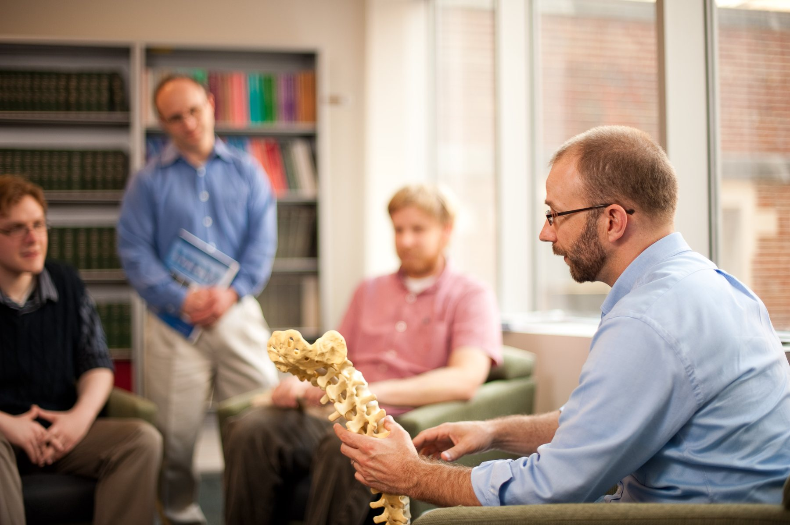

Postdoctoral fellowships
Research positions in imaging AI, foundation models, and digital twins with the founding directors.
Stay tuned
Opportunities
Whether you are a clinician, researcher, student or industry partner, we want you to join us. VCII is preparing its first openings now. Stay tuned.

Details and how to apply will be posted here. Check back soon.
Research positions in imaging AI, foundation models, and digital twins with the founding directors.
Stay tuned
Projects for PhD, MD, and undergraduate researchers across engineering, medicine, and imaging science.
Stay tuned
Seed support for new collaborations that bring AI into imaging and clinical care at Vanderbilt Health.
Stay tuned
Seminars, workshops, and courses on intelligent imaging for trainees and faculty.
Stay tuned